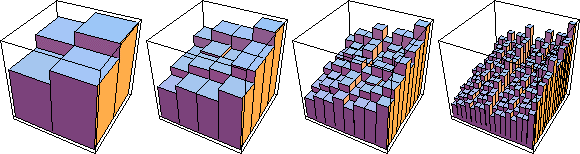
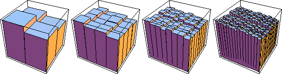

| In this example, we introduce more variability in the probabilities: |
| p1 = 0.2, p2 = 0.25, p3 = 0.25, and p4 = 0.3. |
| Among other things, the number of values of the probabilities of regions increases more rapidly. |
|  |
| Smaller regions have smaller probabilities; if these graphs weren't rescalled vertically they would appear to become closer and closer to a flat surface of height 0. Click here for an animation of the first four iterates, all drawn to the same vertical scale. |
| For each region we expect that |
| prob scales as (side length)some power |
| So instead of letting the height of the graph represent the probability of the
region, now we assign height |
| Because the probability measures the fraction of the points that occupy a region, we think of this ratio as a dimension. |
| Being viewed at the resolution of the side length of the region, this is a coarse Holder exponent; it is also called the coarse dimension. |
|  |
| Compared with the pictures of the probabilities, perhaps the most noticeable feature is the graphs of the coarse Holder exonent curve in the opposite direction. |
Return to Multifractals.